RAG system design
1. Design a RAG system for a customer support chatbot handling 100,000 queries a day
Design advanced
TL;DR. Start from rate/SLA, then pick components: ingestion, hybrid retrieval, reranking, generation, caching, observability. 100k/day is ~1.2 QPS average with bursts.
Key points.
- Budget from QPS + latency SLA.
- Ingestion: parse → chunk → embed → index.
- Hybrid retrieval + reranker + generation + cache.
- Observability and per-session cost caps.
Concept. Start from the request rate and SLA, then choose components: ingestion (parse → chunk → embed → index), retrieval (hybrid dense+sparse), a reranker, a generation layer, caching, and observability. 100k/day is ~1.2 QPS average (bursts higher), so a single server-class vector DB is fine; the real work is cache hit rate, top-k tuning, guardrails, and a feedback loop. Size context and cost per query, then multiply.
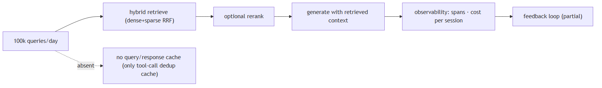
In Jiuwen. Jiuwen provides the ingestion pipeline, hybrid retrieval with rank fusion, optional rerankers (wired only into the graph store), and the context-plus-generation path through its workflow components; the product adds session cost tracking and a per-session cost cap. What a design must add on top: caching, autoscaling, reranking in the knowledge-base path, and production monitoring.
Under the hood
Implementation
Provides the ingestion pipeline (parse_files → chunk_documents → build_index), hybrid retrieval with RRF, optional rerankers (graph store only), and the context/generation path via KnowledgeRetrievalComponent + LLMComponent. Product adds session cost tracking and a per-session cost cap. Gaps a design must cover: no packaged end-to-end RAG agent, no token budgeting on retrieved context, no quality monitoring (only error/latency tracing), and no semantic response cache.
Code anchors
| Code anchor | What it points to |
|---|---|
agent-core/openjiuwen/core/retrieval/simple_knowledge_base.py:96/110/182 |
ingest/retrieve pipeline |
agent-core/openjiuwen/core/retrieval/utils/fusion.py:15 |
RRF hybrid merge |
agent-core/openjiuwen/core/workflow/components/resource/knowledge_retrieval_comp.py:109/243 |
context assembly |
jiuwenswarm/jiuwenswarm/server/runtime/usage_cost.py:171 |
session cost cap |
jiuwenswarm/jiuwenswarm/agents/harness/common/rails/tool_dedup_rail.py:47 |
exact tool result cache |
2. Design a RAG pipeline for a codebase assistant that needs to stay current as code changes daily
Design advanced
TL;DR. Make re-indexing incremental and event-driven: stable IDs per file/chunk, delete-by-ID on change, append new chunks, and trigger on commit/CI — avoid full re-embeds except on model/index changes.
Key points.
- Stable doc/chunk IDs; delete-by-ID on change.
- Append new chunks (no full re-index).
- Trigger into indexing from commit/CI.
- Structure-aware chunks (function boundaries).
Concept. Make re-indexing incremental and event-driven: a stable ID per file/chunk, delete-by-ID on change, append new chunks, and a trigger on commit/CI. Avoid full re-embeds except on model/index changes. Keep chunk boundaries structure-aware (functions/classes) and include file paths/branches as metadata so the assistant can cite and filter.
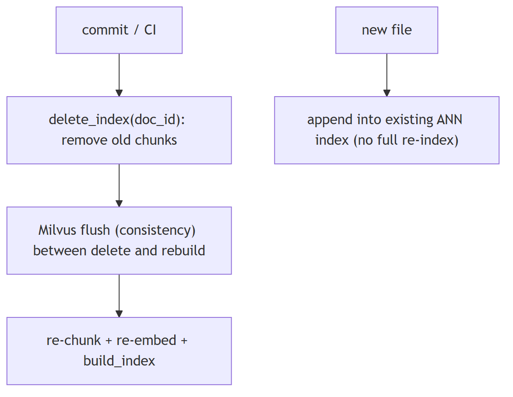
In Jiuwen. The contract is delete-by-document-id plus rebuild: indexers scan a document's chunk ids, delete them, then re-chunk, re-embed, and write (Milvus flushes in between to defeat eventual consistency); new documents append into the existing ANN index with no full re-index. The document id is a first-class scalar-indexed field. There is no code-aware or function-boundary chunker, so a codebase assistant would need to add that.
Under the hood
Implementation
Re-indexing is incremental: build_index appends new documents into the pre-existing ANN index, so adding files triggers no full re-index. An update to an existing document is delete-by-doc_id followed by re-chunk/re-embed/write. doc_id is a first-class, scalar-inverted field, and chunking ships CharChunker/TokenizerChunker plus HybridChunker, though with no code-aware/function-boundary chunker.
Code anchors
| Code anchor | What it points to |
|---|---|
agent-core/openjiuwen/core/retrieval/simple_knowledge_base.py:219 |
update_documents; :74 add_documents appends |
agent-core/openjiuwen/core/retrieval/indexing/indexer/chroma_indexer.py:198 |
update_index = delete + build; :217 delete by doc_id |
agent-core/openjiuwen/core/retrieval/indexing/indexer/milvus_indexer.py:209 |
delete + flush + rebuild; :346 INVERTED scalar index |
agent-core/openjiuwen/core/retrieval/indexing/processor/chunker/hybrid_chunker.py:19 |
structural no-split guard |
3. Design a document search system for a legal firm with millions of confidential documents
Design advanced
TL;DR. Access control dominates, then scale: every chunk carries an ACL and every query is filtered by the caller's permissions inside the vector search (pre-filter), not after.
Key points.
- ACL on every chunk (owner/matter/tenant).
- Pre-filter queries by caller permissions.
- Per-tenant/matter isolation + audit logging.
- Then scale: ANN, quantization, sharding.
Concept. The dominant requirement is access control, then scale. Every chunk must carry an ACL (owner, matter, tenant) and every query must be filtered by the caller's permissions inside the vector search (pre-filter), not after. Combine that with hybrid retrieval, a reranker, encryption at rest, audit logging, and per-matter isolation. Confidentiality also means no cross-matter leakage in the prompt context.
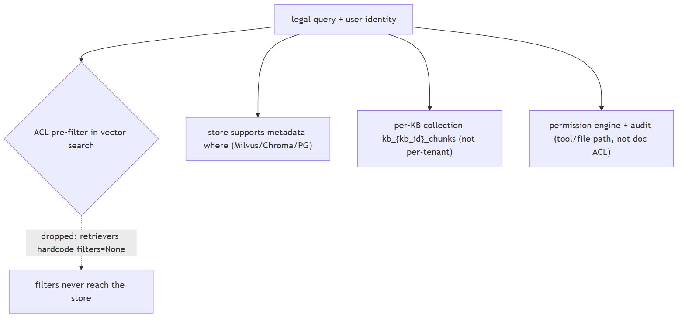
In Jiuwen. Jiuwen supports metadata filtering at the store layer (Milvus expressions, Chroma where-clauses, PG JSONB), per-knowledge-base collections, a permission engine, and audit logging. But the retriever layer drops the configured filters — concrete retrievers hardcode filters to None — so permission-aware retrieval is not reachable through the knowledge-base path; you would have to re-plumb filters through the retriever.
Under the hood
Implementation
Supports metadata filtering at the store layer (Milvus expr, Chroma where, PG JSONB) and per-KB collections (kb_{kb_id}_chunks), plus a permission engine and audit logging. But the retriever layer drops RetrievalConfig.filters — concrete retrievers hardcode filters=None — so permission-aware retrieval is not reachable through the KB path, and there is no document/chunk ACL field. Permission-aware retrieval would require re-plumbing filters through the retriever.
Code anchors
| Code anchor | What it points to |
|---|---|
agent-core/openjiuwen/core/retrieval/common/config.py:53 |
RetrievalConfig.filters; agent-core/openjiuwen/core/retrieval/retriever/base.py:19 — abstract retrieve has no filters; agent-core/openjiuwen/core/retrieval/simple_knowledge_base.py:186 — KB passes filters; agent-core/openjiuwen/core/retrieval/retriever/vector_retriever.py:88 / agent-core/openjiuwen/core/retrieval/retriever/hybrid_retriever.py:81 — hardcoded filters=None |
agent-core/openjiuwen/core/retrieval/vector_store/milvus_store.py:215 |
Milvus filter expr; agent-core/openjiuwen/core/retrieval/vector_store/chroma_store.py:265 — where; agent-core/openjiuwen/core/retrieval/vector_store/pg_store.py:474 — JSONB |
agent-core/openjiuwen/core/retrieval/simple_knowledge_base.py:102 |
kb_{kb_id}_chunks |
agent-core/openjiuwen/harness/security/permission_engine/core.py:272 |
check_permission (tool/file/net, not retrieval) |
agent-core/openjiuwen/core/common/security/user_config.py:69 |
sensitive-path config (filesystem, not doc ACL) |
4. How retrieval architecture changes from 10,000 to 10 million documents
Design intermediate
TL;DR. Small scale: a local index (Chroma/FAISS). Large scale: a dedicated vector DB with tuned ANN (HNSW/IVF/quantization), sharding/replication, and batch ingestion — and you tune recall vs latency.
Key points.
- Small: local in-process index.
- Large: server vector DB, tuned ANN + quantization.
- Sharding/partitioning, replication, batch ingest.
- Tune recall vs latency per query.
Concept. At small scale, a local in-process index (FAISS/Chroma) is fine. At large scale you need a dedicated vector DB with tuned ANN indexes (HNSW/IVF/quantization), sharding/partitioning, replication, and batch ingestion; you also start caring about memory, index build time, and recall/latency tuning per query. The interface stays the same but the operational envelope changes.
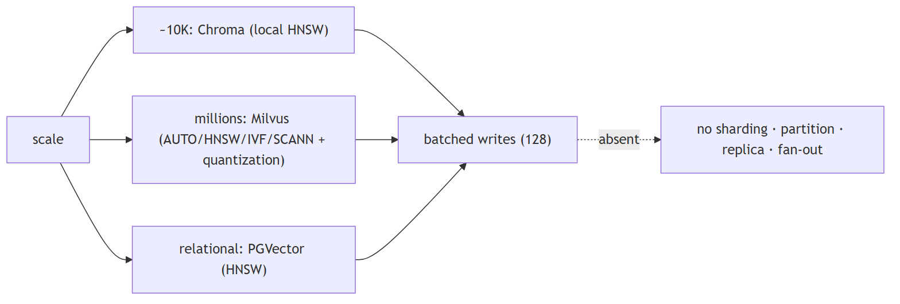
In Jiuwen. Scale-out is delegated to the backend: Chroma is a local persistent HNSW store for small and medium scale; Milvus is a server ANN with selectable index types and quantization for large scale; PGVector is relational HNSW. Writes are batched. There is no DB-level sharding, partitioning, or replication in the repo; cross-KB fan-out exists only at the application layer.
Under the hood
Implementation
Scale-out is delegated to the backend: Chroma = local persistent HNSW (small/medium), Milvus = server ANN with selectable AUTO/HNSW/IVF/SCANN and quantization variants (large), PGVector = pgvector HNSW (relational; the field type also declares ivfflat, but no IVFFlat index branch is implemented). Writes are batched (128) and flushed. Milvus BM25 for hybrid is native (SPARSE_INVERTED_INDEX) plus a jieba analyzer. The architecture is a single collection per KB (kb_{kb_id}_chunks) with one ANN index created once at collection creation. There is no DB-level sharding, partitioning, or replica; cross-KB fan-out exists only at the application layer (retrieve_multi_kb).
Code anchors
| Code anchor | What it points to |
|---|---|
agent-core/openjiuwen/core/retrieval/vector_store/store.py:16 |
create_vector_store (Milvus/Chroma/PGVector); agent-core/openjiuwen/core/retrieval/common/config.py:67 — store type enum |
agent-core/openjiuwen/core/retrieval/indexing/indexer/milvus_indexer.py:433 |
index type AUTOINDEX/HNSW/IVF/FLAT/SCANN; :346 inverted scalar indexes |
agent-core/openjiuwen/core/foundation/store/vector_fields/milvus_fields.py:282 |
MilvusHNSW (M=30, efConstruction=360); :100 Milvus IVF (_BaseIVF, nlist=128/nprobe=8); :164 SCANN |
agent-core/openjiuwen/core/retrieval/vector_store/pg_store.py:203 |
HNSW index; agent-core/openjiuwen/core/foundation/store/vector_fields/pg_fields.py:37 — pgvector defaults |
agent-core/openjiuwen/core/foundation/store/vector_fields/pg_fields.py:37 |
pgvector ivfflat; agent-core/openjiuwen/core/foundation/store/vector_fields/chroma_fields.py:47 — Chroma HNSW defaults |
agent-core/openjiuwen/core/retrieval/vector_store/base.py:57 |
add(..., batch_size=128) |
5. How do you shard or partition a vector database as it grows
Mechanism advanced
TL;DR. Options: partition by key (tenant/category) so queries hit one partition; shard by hash/range across nodes; or replicate and route by collection. Plan for metadata routing and rebalancing.
Key points.
- Partition by tenant/category.
- Hash/range shard across nodes.
- Route queries; plan rebalancing.
Concept. Options: partition by a key (tenant/category) so queries hit one partition; shard by hash/range across nodes; or replicate + route by collection. Most vector DBs expose partition keys or collections; plan for metadata routing and rebalancing. Sharding trades query fan-out for per-shard size.
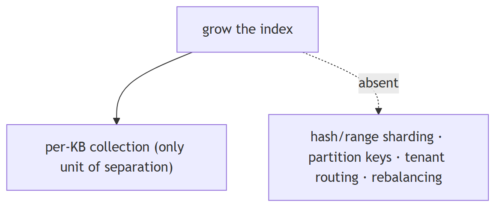
In Jiuwen. Jiuwen has no sharding or hash/range partitioning. The only partition-like unit is a per-knowledge-base collection plus a database-name field; there are no Milvus partition keys, no shard config, and no tenant-hash routing. So sharding would be handled entirely by the chosen backend, not by this code.
Under the hood
Implementation
No sharding or hash/range partitioning. The only partition-like unit is the per-KB collection (kb_{kb_id}_chunks/_triples) plus the database_name field. There are no Milvus partition keys, shard config, or tenant-hash routing.
Code anchors
| Code anchor | What it points to |
|---|---|
agent-core/openjiuwen/core/retrieval/simple_knowledge_base.py:102 |
kb_{kb_id}_chunks |
agent-core/openjiuwen/core/retrieval/common/config.py:79 |
database_name |
agent-core/openjiuwen/core/retrieval/vector_store/milvus_store.py:512 |
delete_table/drop granularity only |
6. Keeping retrieval fast as the vector database grows, without a full re-index
Mechanism intermediate
TL;DR. Append-only incremental indexing into a pre-built ANN index avoids rebuilds; deletes/filters stay fast with scalar/inverted indexes; search-time parameters tune recall vs latency without reindexing.
Key points.
- Append-only writes; no full rebuild.
- Scalar/inverted indexes for fast deletes/filters.
- Search-time params (ef/nprobe) tune the dial.
Concept. Append-only incremental indexing into a pre-built ANN index avoids full rebuilds; deletes/filters stay fast with scalar/inverted indexes; search-time parameters (efSearch, nprobe) tune the recall/latency dial without reindexing. At some point you need compaction/merge of segments and periodic index rebuilds — that is an operational concern, not a query-time one.
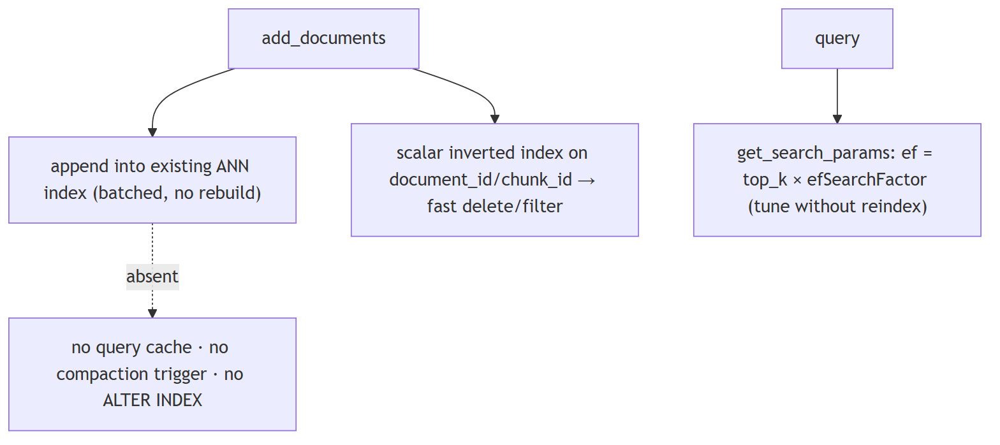
In Jiuwen. Growth is handled by append-only batched writes into a pre-existing ANN index, so adding documents does not trigger a full re-index. Fast deletes and filters use a Milvus inverted scalar index on document and chunk ids, and a search-time recall knob scales with top-k. There is no query result cache and no reindex or compaction trigger.
Under the hood
Implementation
Growth is handled by append-only batched writes into a pre-existing ANN index; existing vectors are untouched, so adding documents triggers no full re-index. Fast deletes/filters use the Milvus inverted scalar index on document_id/chunk_id. get_search_params derives ef = top_k * efSearchFactor per query (a search-time recall knob). lazy_load defers heavy module imports (Milvus/Chroma/parsers), not data. There is no query result cache, no reindex/compaction trigger, and no ALTER INDEX path — once the collection is created, ANN algorithm/params cannot change.
Code anchors
| Code anchor | What it points to |
|---|---|
agent-core/openjiuwen/core/retrieval/vector_store/milvus_store.py:519 |
_ensure_loaded lazy load; :144 index_type change guard; :117 get_search_params ef dial; :199 flush after write |
agent-core/openjiuwen/core/retrieval/indexing/indexer/milvus_indexer.py:321 |
_ensure_collection no-op if exists; :346 inverted scalar indexes |
agent-core/openjiuwen/core/retrieval/vector_store/pg_store.py:172 |
reflects existing table (_reflect_table); :203 index created once |
agent-core/openjiuwen/core/retrieval/lazy_load.py:143 |
lazy_load (module imports) |
agent-core/openjiuwen/core/retrieval/simple_knowledge_base.py:74 |
add_documents appends via build_index |
7. What database would you choose for the vector store, and why that one over the alternatives
Mechanism intermediate
TL;DR. Choose by scale and features: local/embedded for prototypes; a managed vector DB for scale and hybrid; pgvector when you already run Postgres and want one datastore.
Key points.
- Local/embedded for prototypes.
- Managed vector DB for scale + hybrid.
- pgvector for one relational datastore + joins.
- Evaluate hybrid, filtering, ops cost, lock-in.
Concept. Choose by scale and features, not familiarity: local/embedded (FAISS/Chroma) for prototypes; a managed vector DB (Pinecone / Zilliz Cloud) for scale and hybrid search; or pgvector when you already run Postgres and want one datastore, transactions, and metadata joins. Evaluate hybrid support, filtering, operational cost, and lock-in.
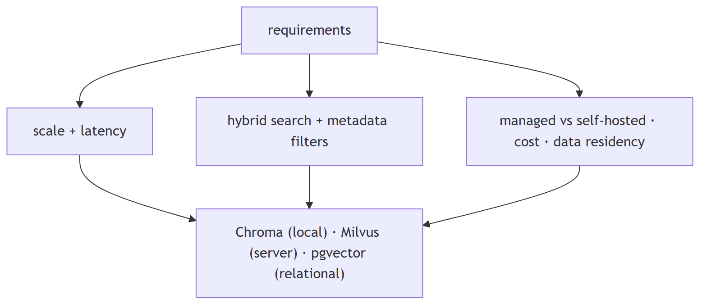
In Jiuwen. Three backends sit behind one factory: Chroma (local, vector-only — sparse and hybrid are rejected), Milvus (server, native BM25 and hybrid with rank fusion), and PostgreSQL plus pgvector (server, full-text sparse plus vector). The knowledge base selects the index type (hybrid by default), so hybrid requires Milvus or PG; Chroma is the small local choice.
Under the hood
Implementation
Three backends behind one factory: Chroma (local persisted, vector-only — sparse/hybrid rejected), Milvus (server, native BM25 + hybrid with RRF), PostgreSQL+pgvector (server, tsvector sparse + vector). The KB selects the index type (hybrid default). So hybrid/RRF requires Milvus or PG; Chroma is the small/local choice.
Implementation diagram
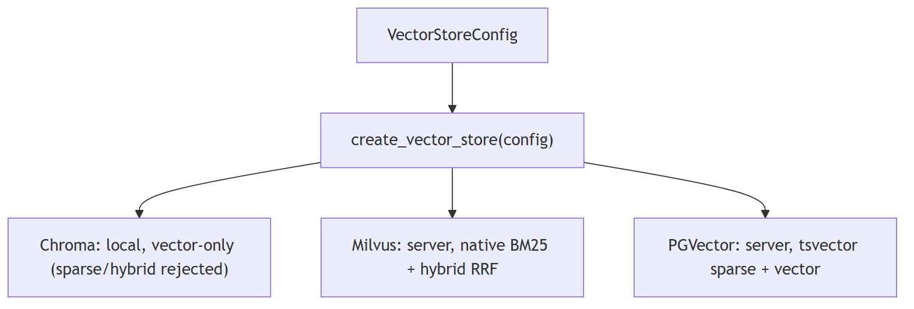
Code anchors
| Code anchor | What it points to |
|---|---|
agent-core/openjiuwen/core/retrieval/vector_store/store.py:16 |
factory dispatch; agent-core/openjiuwen/core/retrieval/common/config.py:67 — StoreType = Milvus | Chroma | PGVector |
agent-core/openjiuwen/core/retrieval/vector_store/chroma_store.py:129 |
PersistentClient (local); agent-core/openjiuwen/core/retrieval/vector_store/milvus_store.py:108 — MilvusClient(uri=...) (server); agent-core/openjiuwen/core/retrieval/vector_store/pg_store.py:108 — create_async_engine(...) |
agent-core/openjiuwen/core/retrieval/knowledge_base.py:59 |
Chroma rejects sparse/hybrid in local mode |
agent-core/openjiuwen/core/retrieval/common/config.py:32/60 |
index types hybrid/bm25/vector |
8. What happens to the user experience if the vector database is down, what's your fallback
Mechanism intermediate
TL;DR. Decide the degradation: fail fast with a clear message, serve cached results, fall back to a secondary index (sparse/replica), or disable retrieval and answer with a caveat — plus a circuit breaker and health checks.
Key points.
- Fail fast with a clear error, or
- Fall back to sparse/cached/replica, or
- Disable retrieval and answer with a caveat.
- Add circuit breaker + health checks.
Concept. Decide the degradation: fail fast with a clear message, serve cached results, fall back to a secondary index (sparse/BM25 or a replica), or disable retrieval and answer from parametric knowledge with a caveat. Add a circuit breaker, health checks, and timeouts so one dependency cannot hang the request. Replicate the index so a single node is not a SPOF.
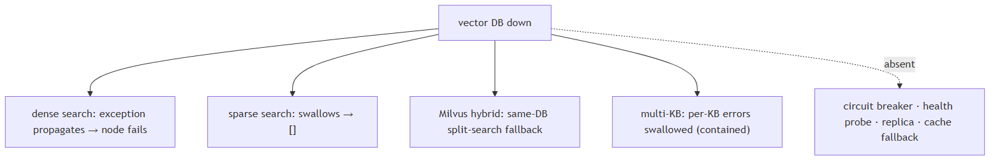
In Jiuwen. There is no availability fallback for a down vector database: dense search does not catch exceptions, so a store failure propagates and fails the workflow node. Sparse searches silently return empty on error, hybrid has a same-database split-search fallback, and multi-KB retrieval swallows per-KB errors. There is no circuit breaker, health probe, or result cache.
Under the hood
Implementation
There is no availability fallback for a down vector DB. Dense search() does not catch exceptions — a store failure propagates through the retriever and fails the workflow node. Sparse searches silently return [] on error, Milvus hybrid has a same-DB split-search fallback, and retrieve_multi_kb swallows per-KB errors (empty list), which contains blast radius across KBs. There is no circuit breaker, health probe, or result cache.
Code anchors
| Code anchor | What it points to |
|---|---|
agent-core/openjiuwen/core/retrieval/vector_store/milvus_store.py:357 |
hybrid_search → _hybrid_search_fallback; :284 sparse_search returns []; :519 _ensure_loaded timeouts |
agent-core/openjiuwen/core/retrieval/vector_store/chroma_store.py:326 |
sparse/text returns [] on error |
agent-core/openjiuwen/core/retrieval/simple_knowledge_base.py:300 |
retrieve_multi_kb swallows per-KB errors |
agent-core/openjiuwen/core/workflow/components/resource/knowledge_retrieval_comp.py:123 |
re-raises build_error |
9. Handling a document updated or deleted after it's already indexed
Mechanism intermediate
TL;DR. Use a stable document id and a delete-by-id path; updates are delete-then-insert (or upsert). Chunk ids derive from the doc id so all chunks can be removed; the hard parts are atomicity and consistency.
Key points.
- Stable doc id + delete-by-id.
- Update = delete + re-insert (or upsert).
- Chunk ids tied to the doc id.
- Atomicity and consistency are the hard parts.
Concept. You need a stable document id and a delete-by-id path; updates are delete-then-insert (or upsert). Chunk ids must be derived from the document id so all chunks of a document can be found and removed atomically. The hard parts are atomicity (a crash between delete and reinsert loses the doc) and eventual consistency in the vector store.
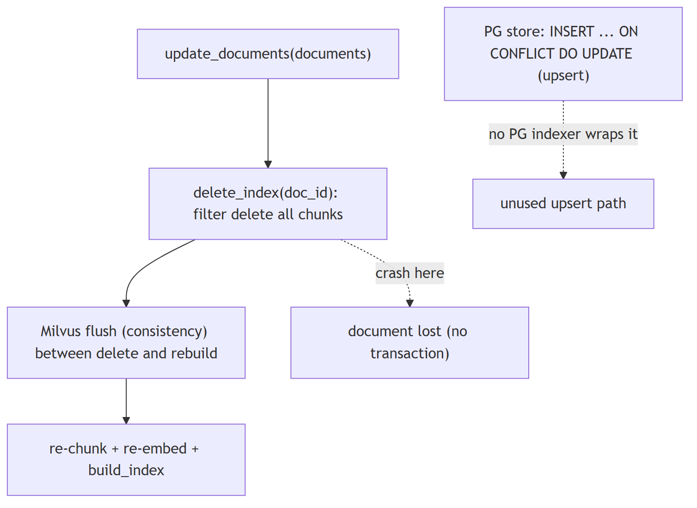
In Jiuwen. The contract is delete-by-document-id plus rebuild: the Chroma and Milvus indexers do not upsert — they find a document's chunk ids, delete them, then re-chunk, re-embed, and write, flushing Milvus in between. The document id is a first-class scalar-indexed field enabling filter deletes. Postgres is the only store with native upsert, but no indexer wraps it, and a crash between delete and rebuild loses the document.
Under the hood
Implementation
The contract is delete-by-doc_id + rebuild. Chroma/Milvus indexers do not upsert: they scan a doc's chunk IDs, delete them, then re-chunk/re-embed/write (Milvus flushes between to defeat eventual consistency). doc_id is a first-class field (document_id, scalar-inverted in Milvus) enabling filter deletes. PG is the only store with native upsert-by-primary-key (INSERT ... ON CONFLICT (id) DO UPDATE), but no PG indexer wraps it. There is no atomic/transactional replace — a crash between delete and rebuild loses the document, and chunk IDs are regenerated UUIDs each run so "same document" relies solely on doc_id.
Code anchors
| Code anchor | What it points to |
|---|---|
agent-core/openjiuwen/core/retrieval/knowledge_base.py:176/184 |
abstract delete_documents / update_documents |
agent-core/openjiuwen/core/retrieval/simple_knowledge_base.py:192 |
delete_documents; :219 update_documents |
agent-core/openjiuwen/core/retrieval/indexing/indexer/chroma_indexer.py:198 |
update_index = delete + build; :217 delete by doc_id; :142 duplicate guard |
agent-core/openjiuwen/core/retrieval/indexing/indexer/milvus_indexer.py:209 |
delete + flush + rebuild; :231 filter delete document_id == doc_id |
agent-core/openjiuwen/core/retrieval/vector_store/pg_store.py:300 |
INSERT ... ON CONFLICT DO UPDATE |
agent-core/openjiuwen/core/retrieval/graph_knowledge_base.py:253 |
delete chunk + triple index; :294 update = delete + re-add |
10. How would you design the system so users never get an answer based on stale, outdated information
Design advanced
TL;DR. Attach timestamps/versions, prefer recency in ranking (or hard-filter to a freshness window), tombstone superseded versions, surface recency to the generator, and propagate deletes promptly.
Key points.
- Timestamps/versions on documents.
- Recency preference or a freshness filter.
- Tombstone superseded versions; propagate deletes.
- Surface recency to the generator.
Concept. Attach timestamps/versions to documents, prefer recency in ranking (or hard-filter to a freshness window), tombstone superseded versions, and surface recency to the generator. Propagate deletes promptly from the source (event-driven) so the index matches source-of-truth, and reconcile periodically.
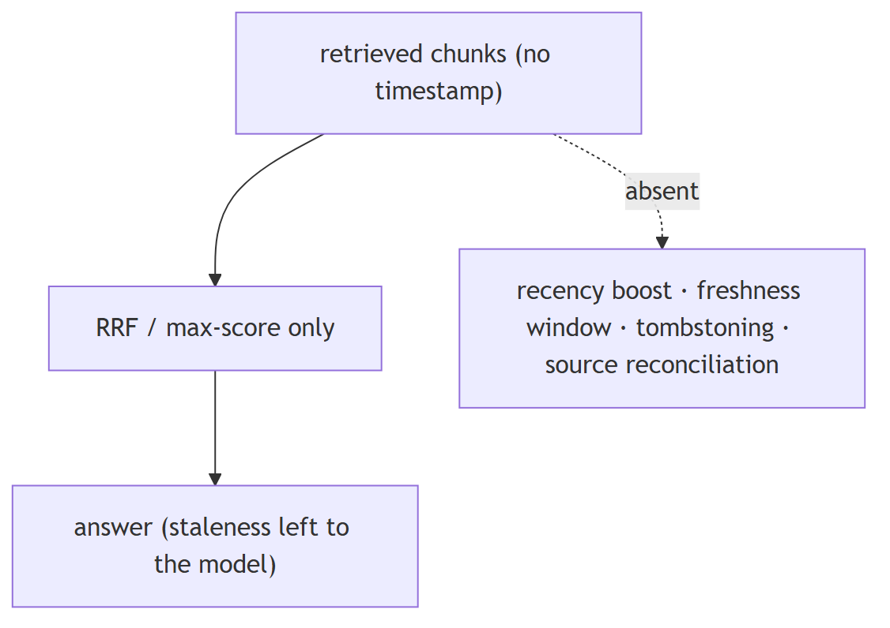
In Jiuwen. The retrieval layer has no notion of document time: results carry no timestamp field (text, score, metadata, doc id, chunk id), parsers set no timestamp, and ranking is score/rank only — no recency boost or outdated filter. Conflict handling is memory-write-only with newest-wins.
Under the hood
Implementation
The retrieval layer has no notion of document time: RetrievalResult/TextChunk carry no timestamp field (RetrievalResult = text/score/metadata/doc_id/chunk_id; TextChunk = id_/text/doc_id/metadata/embedding), parsers populate no timestamp, and ranking is score/rank only (RRF, max-score) — no recency boost or outdated filter. Conflict handling is memory-write-only (MemUpdateChecker, newest wins); a freshness/time-decay notion exists only for experience records.
Code anchors
| Code anchor | What it points to |
|---|---|
agent-core/openjiuwen/core/retrieval/common/retrieval_result.py:23 |
no timestamp field; agent-core/openjiuwen/core/retrieval/common/document.py:30 — TextChunk |
agent-core/openjiuwen/core/retrieval/utils/fusion.py:39 |
RRF by text/rank; agent-core/openjiuwen/core/retrieval/simple_knowledge_base.py:313 — max-score merge |
agent-core/openjiuwen/core/memory/manage/update/mem_update_checker.py:22/252 |
memory-only conflict (newest wins) |
agent-core/openjiuwen/agent_evolving/experience/scorer.py:219 |
calc_freshness (experiences only) |
11. How do you design for the case where retrieval returns zero relevant documents
Mechanism advanced
TL;DR. Detect it (score threshold or answerability) and abstain: return 'not enough information' or ask a clarifying question, rather than answering from noise; optionally fall back to sparse or a graph hop.
Key points.
- Detect: score threshold / answerability.
- Abstain or ask a clarifying question.
- Optional fallbacks: sparse, graph hop.
Concept. Detect it (score threshold or answerability) and abstain: return "I don't have enough information" or ask a clarifying question, rather than answering from noise. Optionally fall back to a broader retrieval (sparse), a knowledge-graph hop, or parametric knowledge with a caveat. Log zero-result queries — they signal coverage gaps.
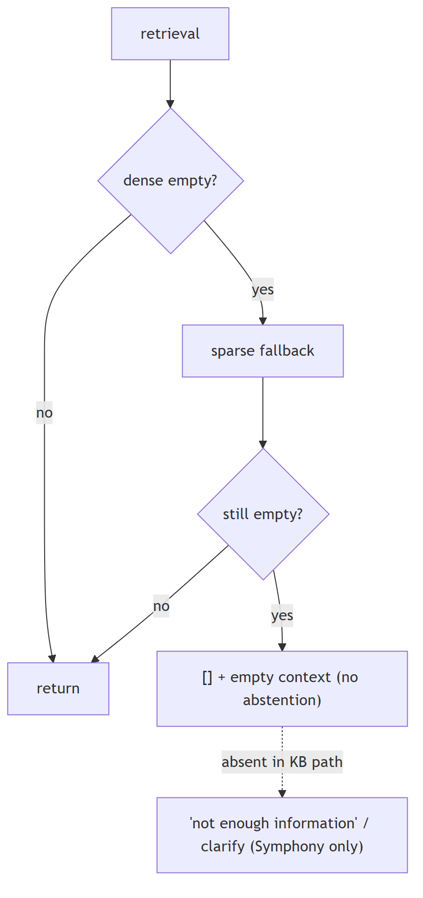
In Jiuwen. The knowledge-base path implements a dense-empty-to-sparse fallback but has no abstention: when both are empty it returns an empty list and the workflow component concatenates an empty context with no 'no answer' signal. Explicit abstention exists only in a separate retrieval subsystem, not in the KB RAG path.
Under the hood
Implementation
The KB path implements dense-empty → sparse fallback, but has no abstention: when both are empty it returns [] and the workflow component concatenates an empty context with no "no answer" signal. Explicit abstention (is_abstain, abstain_no_backfill) exists only in the separate Symphony progressive-retrieval engine, not in core/retrieval KB retrieval. score_threshold defaults to None.
Code anchors
| Code anchor | What it points to |
|---|---|
agent-core/openjiuwen/core/retrieval/retriever/vector_retriever.py:83 |
dense-empty → sparse; agent-core/openjiuwen/core/retrieval/retriever/hybrid_retriever.py:97 — same |
agent-core/openjiuwen/core/workflow/components/resource/knowledge_retrieval_comp.py:241 |
empty results → empty context |
agent-core/openjiuwen/core/retrieval/common/config.py:47 |
score_threshold defaults None |
agent-core/openjiuwen/symphony/retrieval/search/runtime/selector.py:305 |
is_abstain; agent-core/openjiuwen/symphony/retrieval/search/runtime/engine.py:94; agent-core/openjiuwen/symphony/retrieval/search/runtime/progressive.py:1060 — abstain_no_backfill |
12. Your system needs sub-500ms responses, walk me through where you'd spend that budget across retrieval, reranking, and generation
Mechanism advanced
TL;DR. Budget: embedding+vector search tens of ms, rerank tens–low-hundreds, generation the rest; stream tokens so TTFT is what the user feels. Cache and parallelize, and skip rerank when latency-bound.
Key points.
- Retrieval tens of ms; rerank tens–low-hundreds.
- Generation dominates — stream for TTFT.
- Cache embeddings/results; parallelize tools.
- Skip rerank when latency-bound.
Concept. Budget roughly: embedding + vector search tens of ms, rerank tens–low-hundreds of ms, generation the rest (and generation dominates when you stream, because TTFT is what the user perceives). To hit 500ms: stream tokens, cache embeddings/results, keep top-k small, rerank only when it pays, route to a fast model, and parallelize independent steps. Measure TTFT, not total.
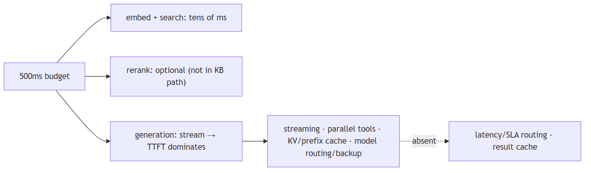
In Jiuwen. Jiuwen provides streaming with per-call TTFT, parallel tool execution with resource lanes, KV/prefix cache affinity, a model failover rail, and an endpoint router. Reranking is optional and absent from the default knowledge-base path, so the rerank budget line is effectively zero unless you enable it; query-result caching is not provided.
Under the hood
Implementation
Provides streaming (ReAct → session → WebSocket frames) with per-call ttft_ms, parallel tool execution with resource lanes, KV/prefix cache affinity, a model backup/failover rail, and IntelliRouter for deployment selection. Reranking is optional and absent from the default KB path (graph store only), so the rerank budget is not spent unless wired. There is no latency/SLA-based routing or result cache.
Code anchors
| Code anchor | What it points to |
|---|---|
agent-core/openjiuwen/core/single_agent/agents/react_agent.py:336 |
parallel_tool_calls; :1758 ttft_ms; :2938 stream |
agent-core/openjiuwen/core/single_agent/ability_manager.py:431/467 |
parallel batches + parallel_safe lanes |
agent-core/openjiuwen/core/single_agent/rail/model_backup.py:9 |
ModelBackupRail.on_model_exception failover |
jiuwenswarm/jiuwenswarm/server/runtime/session/kv_cache/kv_cache_model_provider.py:80 |
KV/prefix affinity |
agent-core/openjiuwen/core/retrieval/simple_knowledge_base.py:182 |
KB path calls no reranker |